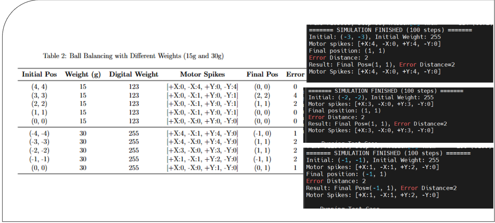
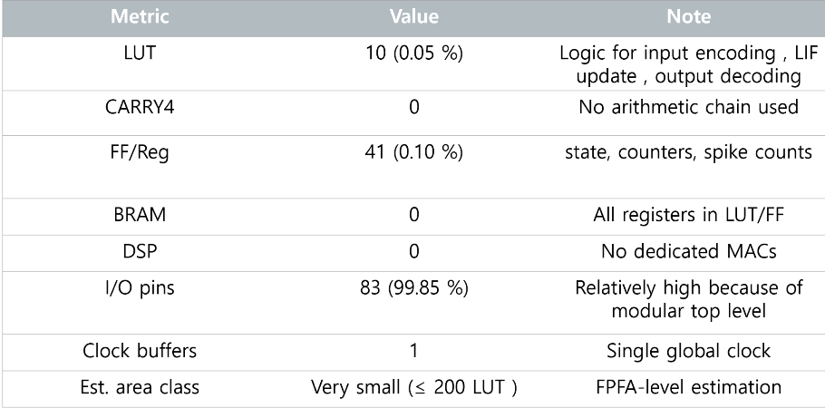
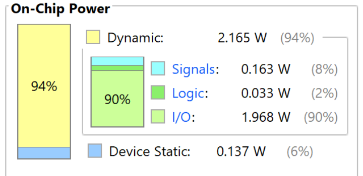

3. 입력 방식을 바꾸며 제어 반응 확인하기
위치 오차가 네 방향 출력으로 이어지는 기본 경로를 만든 뒤에는, 공의 무게가 달라질 때 입력을 어떻게 표현할지 살펴봤습니다. 위치 값을 한 번 전달하는 실험과 무게에 따라 입력 스파이크의 빈도를 바꾸는 실험을 비교했고, 합성 보고서에서는 회로 규모와 I/O, 전력 추정값을 각각 어떤 의미로 읽어야 하는지 확인했습니다.
- One-shot encoding
- 좌표 한 세트를 한 번 전달해 방향 연결과 기본 동작을 확인하는 입력 방식입니다.
- Rate encoding
- 일정 시간 동안의 스파이크 수나 간격에 물리량의 크기를 담는 방식으로, 두 번째 실험에서 무게 차이를 표현했습니다.
- Logic utilization
- LUT·레지스터처럼 내부 회로 규모를 나타내는 값이며, 외부 핀 수를 뜻하는 I/O 사용률과 의미가 다릅니다.
- Power estimate
- 설계 도구가 신호 활동률을 가정해 계산한 값입니다. 실제 보드에서 전력계로 측정한 값과 구분해야 합니다.
위치 one-shot에서 무게 반영 rate encoding으로 확장
첫 실험은 위치 오차가 올바른 방향의 뉴런으로 전달되는지 확인하는 기능 검증에 가깝습니다. 두 번째 실험은 같은 위치에 있더라도 공의 무게가 다르면 제어 반응도 달라져야 한다는 조건을 입력 스파이크의 빈도로 표현했습니다. 한 번의 큰 입력만 보는 대신, 시간축에서 반복되는 스파이크의 간격으로 자극의 차이를 나타낸 것입니다.
| 실험 | 입력 표현 | 확인하려는 내용 | 주요 파라미터 |
|---|---|---|---|
| 실험 1 | 위치 기반 one-shot | 좌표의 부호와 네 방향 출력이 맞게 연결되는가 | THRESHOLD 40, LEAK_SHIFT 4 |
| 실험 2 | 무게 반영 rate encoding | 무게 변화가 스파이크 밀도와 제어 반응에 반영되는가 | THRESHOLD 300, LEAK_SHIFT 6 |
이 비교에서 중요한 점은 두 파라미터 숫자 자체가 아닙니다. 첫 실험으로 방향 연결을 확인한 뒤, 두 번째 실험에서 시간에 따른 입력 패턴까지 검토했다는 데 의미가 있습니다. 실제 기구부의 안정성까지 판단하려면 공의 관성, 모터 응답과 센서 지연을 포함한 폐루프 실험이 더 필요합니다.
| 무게 | Digital weight | 초기 위치 | 네 방향 motor spikes | 최종 위치 | 오차 |
|---|---|---|---|---|---|
| 15g | 123 | (4, 4) | +X:0 · −X:4 · +Y:0 · −Y:4 | (0, 0) | 0 |
| 15g | 123 | (3, 3) | +X:0 · −X:1 · +Y:0 · −Y:1 | (2, 2) | 4 |
| 15g | 123 | (2, 2) | +X:0 · −X:1 · +Y:0 · −Y:1 | (1, 1) | 2 |
| 15g | 123 | (1, 1) | +X:0 · −X:1 · +Y:0 · −Y:1 | (0, 0) | 0 |
| 15g | 123 | (0, 0) | +X:0 · −X:0 · +Y:0 · −Y:0 | (0, 0) | 0 |
| 30g | 255 | (−4, −4) | +X:4 · −X:1 · +Y:4 · −Y:0 | (−1, 0) | 1 |
| 30g | 255 | (−3, −3) | +X:4 · −X:0 · +Y:4 · −Y:0 | (1, 1) | 2 |
| 30g | 255 | (−2, −2) | +X:3 · −X:0 · +Y:3 · −Y:0 | (1, 1) | 2 |
| 30g | 255 | (−1, −1) | +X:1 · −X:1 · +Y:2 · −Y:0 | (−1, 1) | 2 |
| 30g | 255 | (0, 0) | +X:0 · −X:0 · +Y:1 · −Y:0 | (0, 1) | 1 |
모든 사례가 중앙에 도달한 것은 아닙니다. 15g에서는 5개 중 3개가 정확히 (0,0)에 도달했지만, 30g에서는 정확한 중앙 도달이 없었습니다. 발표 표의 오차는 정수 좌표의 Manhattan distance로 보이며, 이 좌표 단위가 실제 cm와 동일하다는 근거는 없습니다. 따라서 “반경 1cm 목표를 달성했다”는 물리 성능으로 환산하지 않았습니다.

보관된 프로젝트에서 확인한 검증 환경
| 항목 | 확인된 내용 | 해석 |
|---|---|---|
| 기능 실험 | Verilog testbench · 100 simulation steps 로그 | behavioral 기능 실험 자료 |
| Vivado | 2025.1 | 보관된 output_layer.xpr metadata |
| Target part | xc7vx485tffg1157-1 | 로컬 XPR에 기록된 합성 target |
| Top module | controller_top | output-layer snapshot의 top |
| Board part | 미지정 | 발표의 AC701 표기와 XPR이 일치하지 않음 |
| Clock·timing | constraint와 timing report 미확인 | timing closure 또는 bitstream 동작을 주장하지 않음 |
Input_Neuron_RateEncoder와
Baby_Neuron_Core를 포함한 별도 네트워크 코드입니다.
확인한 controller_top/error_encoder/lif_neuron 세 파일은
output-layer 구조를 설명하는 snapshot이며, 앞의 실험 결과가 이 세
파일의 bit-accurate 검증을 뜻하지 않습니다.
작은 내부 로직과 높은 top-level I/O 사용률
아래 값은 발표자료에 기록된 FPGA 합성 결과입니다. LUT, 레지스터, DSP와 BRAM은 제어 로직의 크기를 보여 주지만, I/O는 외부로 노출한 신호 수를 보여 줍니다. I/O 비율이 높다고 해서 내부 계산 회로가 큰 것은 아니므로 같은 의미로 합치지 않고 읽어야 합니다.

I/O switching이 큰 비중을 차지한 2.302W 전력 추정
이 값은 전력계로 보드에서 측정한 결과가 아니라 발표자료에 포함된 설계 도구 추정치입니다. 내부 연산 로직이 매우 작은데도 dynamic power가 크게 나타난 것은 많은 I/O의 switching 가정이 포함됐기 때문입니다. 실제 소비전력을 말하려면 최종 핀 구성과 동작률을 적용한 뒤 보드에서 별도로 측정해야 합니다.

프로젝트에서 맡은 일
팀장으로서 1차 SNN 조사와 2차 회로 설계의 일정과 발표 흐름을 관리했습니다. SNN/LIF 및 관련 하드웨어 사례를 조사하고, BallControl의 물리 조건을 위치·속도·무게 입력과 네 방향 출력으로 옮기는 작업에 참여했습니다. output-layer의 encoder, LIF, top-level 구조를 정리했으며, 실험 코드와 발표자료가 같은 설계를 설명하도록 최종 자료를 구성했습니다.
팀 프로젝트이므로 이 글은 모든 기계·전자 시스템이나 코드 전체를 개인이 단독으로 완성했다는 뜻이 아닙니다. 여기서 확인할 수 있는 기여는 요구사항 해석, SNN 출력 제어 구조, RTL 통합과 실험·문서 정리입니다.
다음 단계에서 확인할 것
- Python 또는 HDL 기준 모델과 막전위·스파이크를 클록 단위로 비교합니다.
- 고정 폭 곱셈에서 overflow와 saturation이 생길 때의 규칙을 명시합니다.
- 반대 방향 출력이 동시에 켜지지 않도록 보호 로직과 motor pulse shaping을 추가합니다.
- 실제 센서·모터·기구부의 지연과 관성을 포함해 LIF 파라미터를 다시 조정합니다.